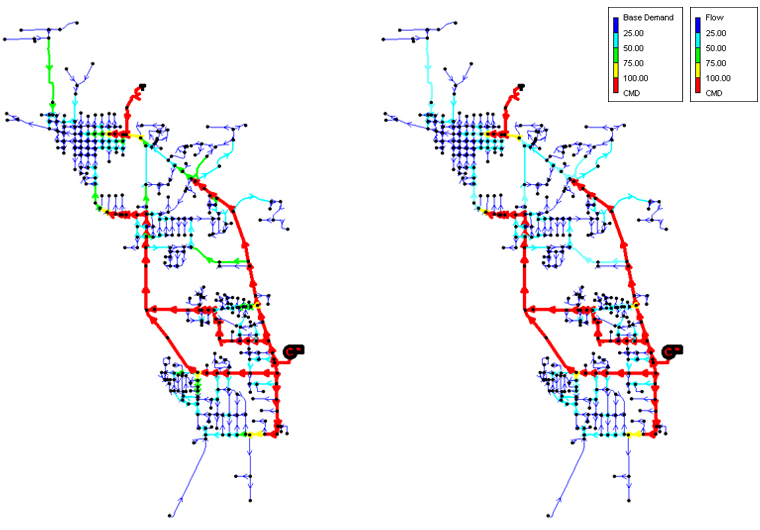
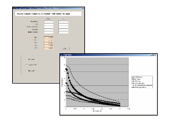
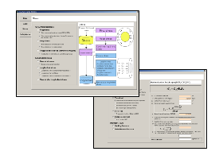

상수관망관리 프로그램
Virtual Pipe 고품질 수돗물 공급 처리를 위한 시기별, 지역별로 분류된 과업을 제공할 수 있는 솔루션
설계관망 모형과 실제관망 모형과의 주요변화 인자는 관로의 통수 단면적, 관로내 조도계수, 누수량의 3가지이며, 위 인자는 직접방법으로 파악이 불가능하므로 대안으로 정확도면에서도 직접 방법에 의한 결과와 비슷한 정도가 기대되는 간접방법을 채택하여 개발한다.
개요
고품질 수돗물 공급
현장관리자의 신속한 업무 파악 및 처리를 위한시기별, 지역별로 분류된 과업을 제공할 수 있는 S/W 개발
-
수리
EPANET [진단S/W] 탑재
수리해석 모형
-
수질
관로망 수질평가 및 모의모델
누수 예상지역 분석 및 수리진단
-
시설
시설개량 계획 모듈
안전성 평가 모듈
특장점
-
01 수질 수의모델
- 입력불균형, 유속저하, 누수 예상지역 분석 및 수리진단
- 급수체계 개선 및 대안검토
- 잔류염소 및 소독부산물 예측 -
02 Data Base Manager / CAD & GIS 관망도 작성
- 평가에 필요한 정보통합관리, 모델 수행에 필요한 정보관리
- NGIS 수치지도, CAD자료 등 활용
- 관망해석에 필요한 관망도 생성 -
03 노후도평가 및 잔존수명예측
- 관로망 노후도 평가에 의한 잔존수명 예측
- 위험성평가를 통한 구조적 진단
-
04 의사결정 지원
- 평가분석/대안별 모델 분석
- 시설개선/운영개선 계획수립 지원
관망모형
-
실제 관망모형
분석용 관망도 작성
설계관망 모형과 실제관망 모형과의 주요변화 인자는 관로의 통수 단면적, 관로내 조도계수, 누수량의 3가지이며, 위 인자는 직접방법으로 파악이 불가능 하므로 대안으로 정확도면에서도 직접 방법에 의한 결과와 비슷한 정도가 기대되는 간접방법을 채택하여 개발한다.분석용 관망모형을 통해 적절한 수의 시나리오를 준비, 현재상태를 모의하고 합리적인 장·단기 휴지관리 계획을 수립
-
잔존수명 평가모델 GUI
관노후상태 정밀평가 GUI